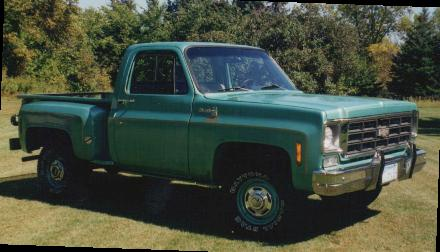

This is a 1978 Chevrolet , It was a very rusted,
long box,fleetside truck when I bought it, with a snowplow. I shortened the
frame to the shortbox length, and put on the stepside box with all new sheet
metal all around. It has a 400 V-8, and automatic transmission.